Down the Rabbit Hole: How a 33-Tool-Call Bug Became a Knowledge Standard¶

It started with a question no one expected to be hard.
Day seven of the lib-pcb build. January 2026. A single developer, eleven days to produce what the industry does in ten to eighteen months. The AI was generating code at a pace that defied every estimate. Features that should take a week arrived in hours. The skill library -- YAML files encoding project-specific context for Claude Code -- had grown to over forty entries. Everything was working.
And then everything stopped.
"What fields does the DrillHit class have?"
The AI did not know. The class had been written four days earlier. It was central to the entire parsing architecture. It had been discussed in multiple sessions. But the context was gone -- fresh session, blank slate. The AI started searching. Grep for the class name. Read the file. Follow the imports. Check the parent class. Read that file. Check the serializer. Follow another import. Back to grep. Thirty-three tool calls to answer a question that any developer on the project for a week could answer in ten seconds.
Eleven minutes. For one question.
That was the moment something broke open. Not the code -- the assumption underneath it. The assumption that making AI faster at creating code was sufficient. Creation had been accelerated by an order of magnitude. Comprehension had not moved at all.
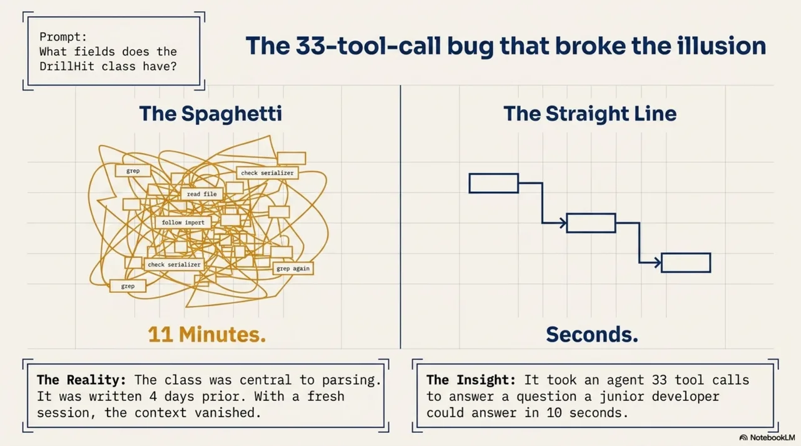
Part I: The rabbit hole¶
Skills need structure¶
The lib-pcb project ran from January 16 to 27, 2026. The result: 197,831 lines of Java, 7,461 tests, 99.8% pass rate, manufacturing-ready Gerber exports. By any measure, a success. By any traditional timeline, impossible -- the industry standard for equivalent scope is ten to eighteen months.
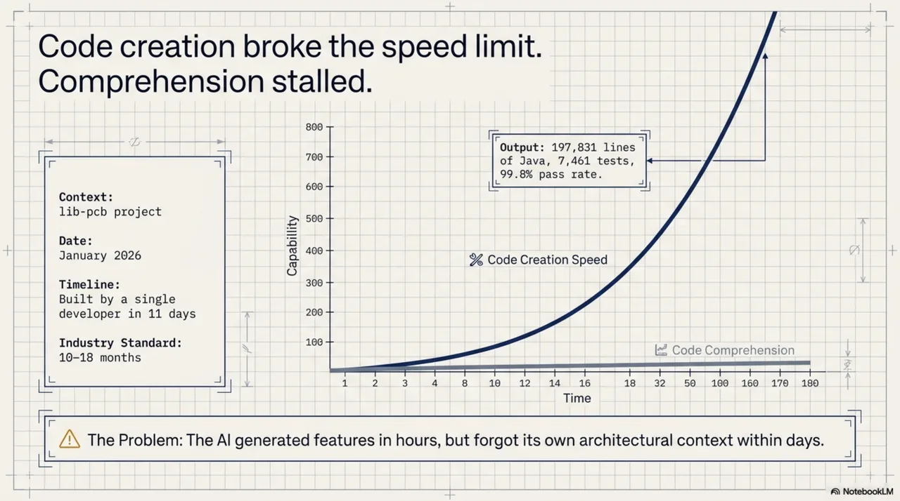
The method was straightforward in retrospect. Every lesson learned during the build was captured immediately as a skill -- a YAML file that gives Claude Code persistent, project-specific context. Bug fix? Skill. Architectural decision? Skill. Useful pattern? Skill. Eighty-five skills by the end.
But somewhere around skill number forty, a quiet problem appeared. The skills existed. Claude could not always find them. A skill about serialization patterns would not surface during a serialization task because nothing connected the two.
The response was not to design a system. It was instinct. Watch the agent fail to find a skill. Add an index entry. Watch it fail to connect two related skills. Add a cross-reference. Watch it pick the wrong skill for a task. Add routing hints -- "this skill applies when you are working on X, not Y." The structure grew organically out of watching. Each addition was a small, pragmatic fix for a specific failure. There was no theory yet. There was a developer watching an agent struggle and thinking: what would help it find the right thing?
The intuition preceded the theory by weeks. By the time the collection reached sixty skills, it had acquired an index, cross-references between related skills, scope annotations, and routing metadata -- a small navigation layer that no one had planned, that had grown one fix at a time from observation.
Only later did the pattern get a name. This crystallized into Skill-Driven Development -- SDD -- a methodology built on six pillars. Intelligent Context: teach the AI your codebase DNA. Strategic Delegation: right model, right task. Trust But Verify: productive paranoia, catching hallucinations before they reach production. Directed Synthesis: the human stays the conductor. Process Discipline: guardrails that enable velocity. Continuous Learning: every mistake becomes a skill.
The term was coined by Vidar Moe at SpareBank 1 Utvikling on February 3, 2026, during a meeting where the methodology was demonstrated. The lib-pcb skills did not transfer to other projects -- the method did. Confirmed a second time when Synthesis was built: 84,692 lines of code in seven days, 73 pull requests, 65% Claude co-authorship. Completely different domain. Same method.
But SDD, for all its utility, was still about one agent working on one project. The thirty-three-tool-call incident pointed at something larger.
The llms.txt gap¶
The immediate instinct was to look at what already existed. Jeremy Howard's llms.txt -- a file at the root of a project listing what the project contains. The lib-pcb project already had one.
It was not helping.
The question -- why? -- took a week to answer. llms.txt is a table of contents. Agents need a map. A table of contents tells you what pages exist. A map tells you how they relate -- which modules depend on which, which documentation is relevant at which point in a task, which content was current last week and which has been stale for six months. A table of contents cannot express topology, intent, freshness, or selective loading.
Dead simple is the right design for a personal website with twenty-seven pages. It is not the right design for a codebase with 8,934 files.
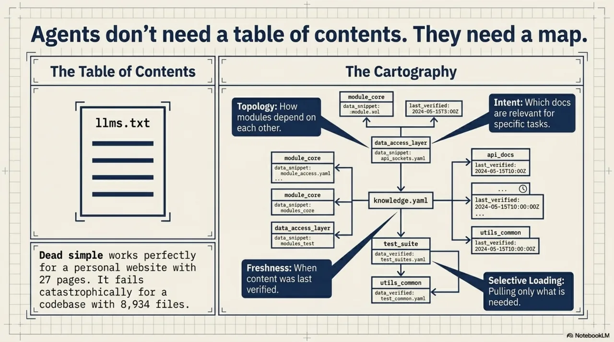
The Mirror Test¶
To quantify the staleness problem, a benchmark was designed. Three conditions. An AI agent given the same questions about a module, with three different documentation states.
With no documentation: the agent explored the code, acknowledged uncertainty, arrived at approximately correct answers.
With current documentation: the agent loaded the docs, understood the module quickly, gave accurate answers with high confidence.
With stale documentation: the agent loaded the docs, gave confident, fluent, completely wrong answers, and showed no sign of uncertainty. The documentation said the field count was eight. The code, after a month of development, had fourteen. The agent reported eight. Confidently.
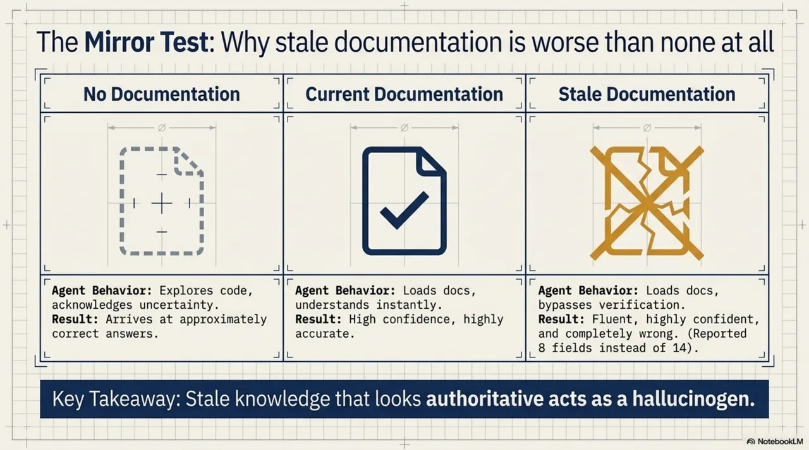
Stale knowledge that looks authoritative is worse than no knowledge at all. llms.txt has no answer for this. There is no freshness field. There is no way to tell an agent that a document was last verified before the refactoring that changed everything it describes.
The parallel¶
Around the same time -- February 2026 -- the Model Context Protocol was gaining adoption. MCP defines how AI agents connect to tools: a standard interface, a common protocol. The parallel was immediate.
MCP handles tools. There was no equivalent standard for knowledge.
And then came the uncomfortable realization. The skill indices, the cross-references, the routing metadata, the freshness annotations -- all the small pragmatic fixes that had accumulated during the lib-pcb build -- were not a local workaround for one project. They were a prototype of something the entire ecosystem was missing. MCP had given agents hands. Nothing had given them a map. The thing on the workbench, built to solve one developer's problem with one agent on one codebase, was a sketch of infrastructure that every agent needed and no one had built.
The AI agent ecosystem had invested heavily in model capability, tool connectivity, and agent frameworks. The knowledge structure layer -- how knowledge is organized so agents can navigate it reliably -- had been largely skipped.
KCP is to knowledge what MCP is to tools.
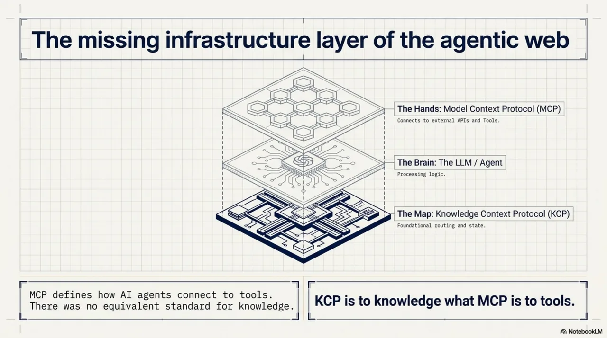
The Knowledge Context Protocol was published as a draft specification on February 25, 2026. A knowledge.yaml manifest. Readable by humans, navigable by agents. Topology, intent, freshness, audience, selective loading. The same question that took thirty-three tool calls -- "What fields does the DrillHit class have?" -- takes three when the agent has a manifest that points it to the right place.
The working stance¶
Before moving to what happened next, one thing needs to be made explicit, because it is the thread that connects everything that follows.
A mental model had developed during the lib-pcb build, quietly, without being articulated. It went something like this: when the agent struggles -- flailing tool calls, retries, confident wrong answers -- the instinct is to take over. Do the task yourself. Or blame the model. But a different move kept proving more productive: watch the struggle, identify what capability is missing, build that capability, and hand it to the agent.
Not operate the agent like a tool. Equip it like a capable colleague who is missing one piece of context.
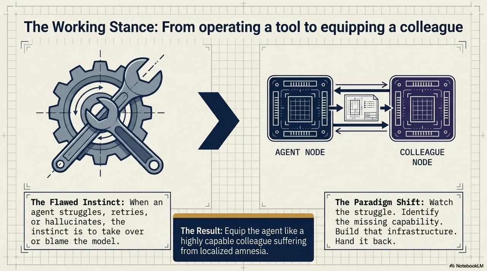
Every major piece of the stack came from this same move. The agent could not find the right skill? Build navigation and hand it over. The agent burned tokens on --help lookups? Build kcp-commands and hand it compact guidance. The agent started every session from zero? Build kcp-memory and hand it its own history. The agent could not navigate a new codebase? Build knowledge.yaml and hand it a map. Each time: observe the struggle, provide the missing thing, watch the agent solve harder problems at higher quality.
This is the method. Not the six pillars, not the spec versions, not the tooling. The method is: be helpful to the agent, the way you would be helpful to a colleague. The rest follows.
Part II: The expansion¶
The problem was not just skills¶
The draft spec was published. The reception was polite. And then the real work began -- the part where a specification meets reality and discovers all the things it forgot.
The first discovery was that the problem was not confined to skills, or even to codebases. It was knowledge in general. Any structured corpus that an agent might need to navigate -- regulatory frameworks, API documentation, operational runbooks, compliance policies -- suffered from the same six gaps that llms.txt could not fill. The thirty-three-tool-call problem was not a lib-pcb bug. It was a structural gap in how the entire ecosystem handled knowledge.
kcp-commands: the noise problem¶
The same move again: watch the struggle, identify what is missing.
Watching Claude Code work through tasks, a pattern emerged. When the agent was unsure which flags to use, it would run --help first, read the output, then run the actual command. Every flag lookup cost 500 to 800 tokens of help text. After execution, the problem reversed: ps aux on a development machine produces over 30,000 tokens of process table. The agent needed a dozen rows. The agent was not doing anything wrong. It was doing the only thing it could -- burning context to compensate for missing knowledge about commands it had never been taught.
kcp-commands shipped on March 2, 2026. A hook system that intercepts Bash tool calls at two points. Before execution: inject a compact context block with the right flags and usage. After execution: filter the output to the relevant lines. The measured result across a benchmark session: 67,352 tokens saved -- 33.7% of a 200K context window recovered.
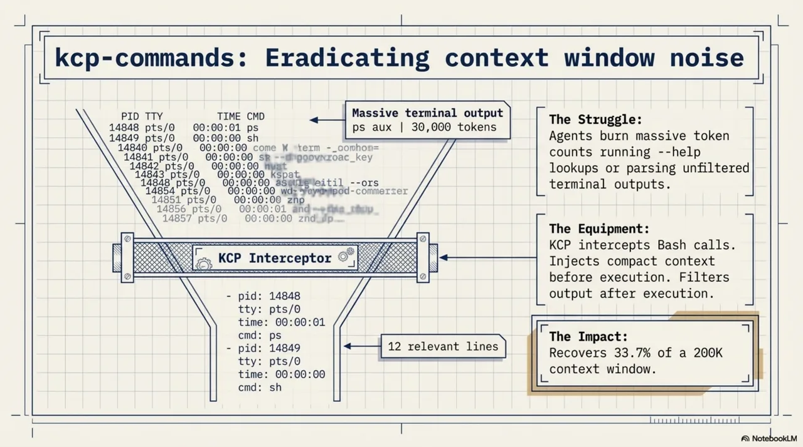
kcp-memory: the blank-slate problem¶
The next morning, March 3, another struggle. Every Claude Code session starts from zero. The agent has no memory of what it did yesterday, which files it touched last week, or how it solved a similar problem three sessions ago. The lib-pcb project had accumulated 3,007 sessions across 55 days. Every session started from zero. A capable colleague with amnesia.
kcp-memory was the answer. A Java daemon that indexes session transcripts into a local SQLite database with full-text search. The tool that made it most useful: kcp_memory_project_context(). No query, no argument. It reads the current working directory, returns the last five sessions and twenty tool-call events, and delivers them to the agent at the start of the session. The blank-slate problem, structurally solved -- by giving the agent access to its own history.
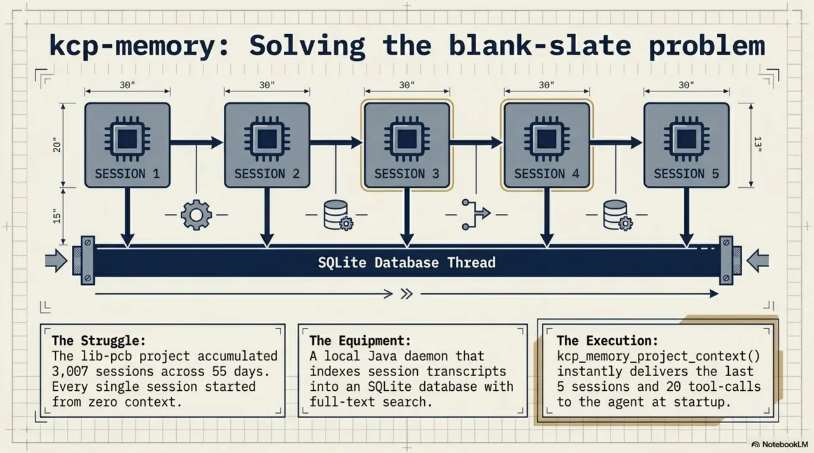
Three layers of a missing infrastructure stack were now visible:
- kcp-commands gives agents vocabulary -- what commands exist, how to use them
- kcp-memory gives agents history -- what happened before in this project
- knowledge.yaml gives agents a map -- what knowledge exists, where to find it, what it means
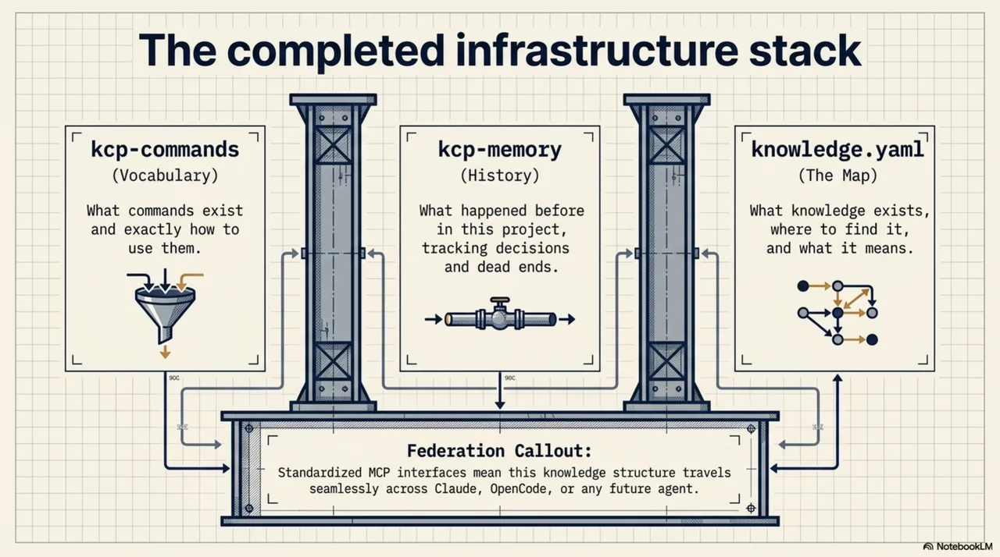
Bridges and federation¶
KCP started as a Claude Code story. But the agentic-web realization -- the uncomfortable moment of recognizing that the thing on the workbench was not a local hack but a missing layer of the ecosystem -- meant it could never stay there. If the problem was that no agent had a map, the solution had to work for every agent, not just one.
The first bridge came on March 3: opencode-kcp-plugin, a plugin for OpenCode. The significance was not the implementation -- it was what it proved. A project with a knowledge.yaml file is now navigable by Claude Code, OpenCode, or any other tool that implements the spec. The knowledge investment is not locked to one tool. It travels -- because it was never really about Claude Code.
Three bridge implementations -- TypeScript, Java, Python -- shipped with the spec repository, all exposing the same MCP interface. Any MCP-compatible agent connects and navigates. No custom plugin, no vendor integration. Standard protocol.
Part III: The evolution¶
v0.10 to v0.12: from discovery to governance¶
The spec grew through releases that each addressed a problem visible from the previous one.
![Evolution into enterprise governance (v0.10 – v0.14), drawn as an ascending staircase. Stage 1: Discovery (v0.11) — pre-invocation querying, max_age_days policies, cold discovery via /.well-known/kcp.json. Stage 2: Authority (v0.12) — provenance tracking (verified, observed, rumored, deprecated) and fine-grained permissions (read, summarize, modify, execute). Stage 3: Composition (v0.14) — manifest inheritance with includes, overrides, excludes; teams stop forking YAML files and start layering organizational knowledge.](../../../../../assets/images/kcp-journey-11.webp)
v0.10 introduced the core query vocabulary. Instead of an agent loading every file in a repository, the manifest enables pre-invocation discovery. The agent asks a question. The serving layer scores units by trigger match, intent match, and path match. The agent loads only what it needs.
v0.11 tackled cold discovery -- how an agent finds the manifest in the first place when starting from nothing but a domain name. The answer: an llms.txt bootstrap chain and /.well-known/kcp.json. No central registry. Just a chain of well-known locations that any agent can follow from zero context. v0.11 also added freshness policies -- max_age_days, on_stale behavior -- so agents could assess whether knowledge was current without a human in the loop.
v0.12 was where things got interesting. The release introduced discovery, authority, and visibility blocks -- a governance layer. v0.10 and v0.11 answered "what knowledge exists and how do I find it?" v0.12 answered a different question entirely: "what am I allowed to do with this knowledge, and how much should I trust it?"
Discovery added provenance tracking with four verification states -- verified, observed, rumored, deprecated. Authority provided fine-grained action permissions: read, summarize, modify, execute, share externally, each defaulting to the conservative setting. Visibility made access declarations conditional on environment and role.
This was the pivot from capability to governance.
v0.14: query composition¶
By late March, a different pain point had become visible. Every agent that queries a knowledge manifest reinvents filtering. One checks token budgets. Another filters by audience. A third ignores stale content. None of them agree on the format.
v0.14 standardized the query vocabulary. Section 15 of the spec gave agents a shared way to ask: which units match my task, fit my budget, and require capabilities the agent actually has? Scored results. Budget-constrained selection. Stale content filtered. Federation across sub-manifests in one hop. RFC-0007 and RFC-0008 were promoted from open RFCs to core spec.
Alongside v0.14, RFC-0014 proposed a manifest composition model -- so teams could stop forking manifests and start inheriting them. Includes, overrides, excludes. The organizational reality that knowledge is not flat but layered, and the format needed to reflect that.
From instrumentation to infrastructure¶
The tooling evolved in parallel. kcp-commands grew from passive hooks to infrastructure that knew its own limitations. v0.14.0 added the suppression list: 40+ commands -- git, grep, ls -- return immediately with no manifest lookup. The first sign of self-knowledge: recognizing what you do not need to teach. v0.16.0 stamped every event with the SHA-256 hash of the active YAML manifest, making "before the manifest was fixed" and "after" distinct populations. First data from that instrumentation: ssh had a 69% retry rate, gh-api had a 71% failure rate. Six manifests were rewritten from the numbers alone.
kcp-memory recovered something that was being quietly lost. When Claude delegates via Task, subagents contain 19% of session data -- compressed 40:1 to 100:1 in the summary the parent session sees. Dead ends, rejected approaches, the full investigation trail. Previously invisible. Now indexed.
The arc from instrumentation to infrastructure: hooks that learned what to suppress, events that identified their own manifest version, memory that could see into delegated sessions.
Production: regulations as machine-readable data¶
By late May, the spec had moved beyond developer tooling into territory that had not been part of the original plan: compliance infrastructure.
Mynder -- a compliance SaaS platform operating across 85+ Norwegian companies and 6 regulatory frameworks -- adopted KCP as the structure for regulatory knowledge. Not the prose of the regulations. The machine-readable declarations that tell an agent what law applies, what sensitivity level governs this data, what audit trail is required, and how deep the delegation chain is allowed to go.
The compliance block turns regulations into structured metadata. compliance.regulations: [GDPR] maps to a defined vocabulary. compliance.data_residency: [EEA] declares where data may be processed. An auditor can validate these fields independently of the application code -- no need to read the agent's source or understand its prompts.
The knowledge base behind it: 49 regulatory frameworks indexed, 896,000 tokens of regulatory content, 583 audit units -- of which six frameworks drive the live evaluations. Every agent decision logged with source document, model version, autonomy level, evaluator identity, and timestamp. Not sampled -- every action, every time.
An auditor's question -- "How do you know this AI decision is correct?" -- was answered not with model cards or attention maps, but with a ledger. Each entry linked the action, the rule, the evaluator's binary verdict, and the W3C trace context. Double-entry bookkeeping survived centuries of fraud not because it is clever, but because it is tedious, complete, and hard to fake. KCP works the same way.
Boring passes audit.
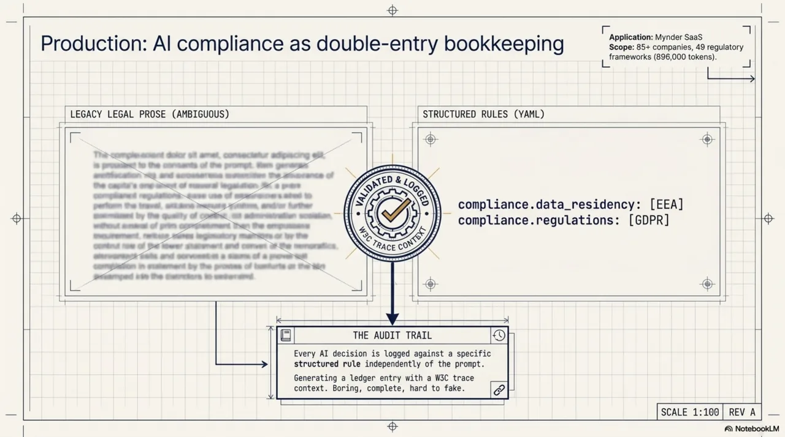
The trust gap and the content gap: v0.16 and v0.17¶
Which brings the story to today.
Two gaps had been visible for months but unaddressed. The trust gap: when your agent pulls context from four federated manifests across two organizations, one of which was generated by an automated crawl three weeks ago, how do you know the knowledge has not been tampered with? The content gap: trust tells you whether to ingest a unit, but it does not tell you whether the unit is useful for your current task.
v0.16 introduces the Trusted Render Pipeline. Three principles: LLM-free (deterministic transforms only), fail-closed (any failure produces no output, not partial output), and consumer-side tier assignment (a manifest cannot claim to be trusted -- the consumer decides). Four trust tiers: trusted, known, unsigned, failed. Cryptographic signing with Ed25519. And the mechanism that closes the signature-stripping attack: scope pinning. When a public key is added to an allowlist with a pinned origin, a manifest arriving from that origin without a signature renders as failed, not unsigned. The absence of the expected signature is itself the signal.
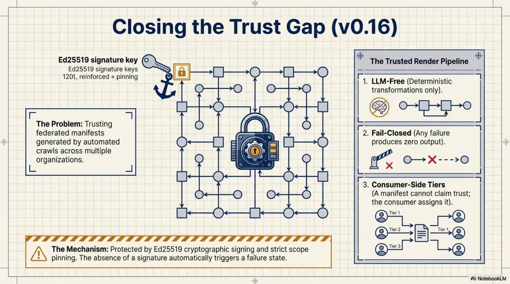
v0.17 introduces content structure metadata -- primary, contains, density -- so a RAG pipeline can decide its extraction strategy before fetching a unit, not after. And the spec's first subtractive matching field: not_for. Every previous matching field in KCP is additive -- triggers, intents, scopes all say "this unit is relevant when X." not_for says the opposite: "this unit is explicitly not about Y." The negative space that search systems almost never model. Soft demotion by default; hard exclusion with not_for_strict: true.
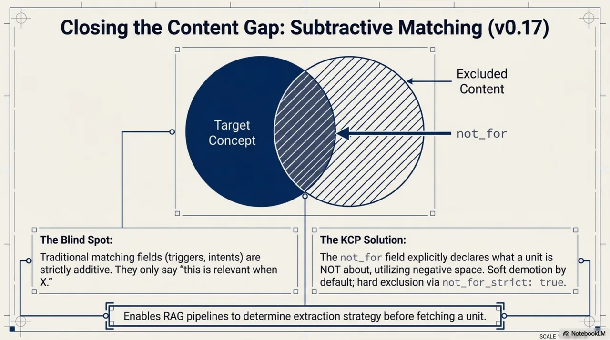
The details of both releases are in the companion post, published today. What matters for this story is the arc.
The arc¶
There is a shape to how this unfolded, and it was not planned.
A developer hit a bug -- thirty-three tool calls for one question. The bug was not in the code. It was in the absence of infrastructure. The response was not to design a grand system. It was the same small move, repeated: watch the agent struggle, figure out what it is missing, build that thing, hand it over, and watch what happens next.
What happened next was always a new struggle. The agent could find skills but could not find knowledge across codebases. It could navigate a codebase but wasted a third of its context on command noise. It could work within a session but forgot everything between sessions. It could navigate one tool but not another. Each solution revealed the next gap. The spec grew from the problems, not toward a vision.
Dead ends along the way. RFC-0005 on payment and rate limits turned out to be scope creep -- labelled L4 enterprise extension and moved out of core. The original discovery mechanism assumed agents would always start from a known manifest URL -- the cold-discovery problem in v0.11 corrected that. The compliance block was not in the original proposal at all -- it was added after watching agents operate in regulated environments and realizing that system-prompt compliance instructions are invisible to auditors.
None of the releases after v0.10 were in the plan when v0.10 shipped. Each was a response to a problem encountered in production -- by watching the agent, identifying the struggle, and asking the same question that started everything: what would help it here?
From forty skills in a .claude/skills/ directory to a specification at v0.17 with fifteen RFCs, three bridge implementations, parsers in three languages, tooling for episodic memory and command optimization, production use in compliance infrastructure, and a trust model validated against a 22-case threat matrix.
It started with a question about a Java class and thirty-three tool calls.
It is not finished.
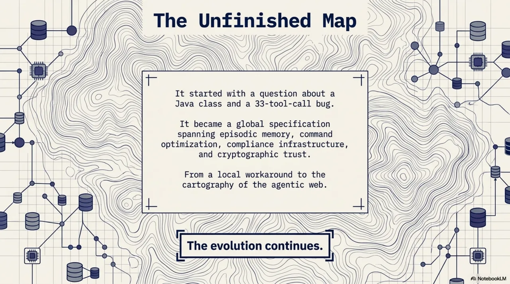
KCP specification: github.com/Cantara/knowledge-context-protocol
Today's release post (v0.16 + v0.17): Beyond RAG: How KCP 0.16--0.17 Give Agents Trustworthy, Self-Describing Knowledge
Co-authored with Claude. The structure and framing are mine; Claude helped draft and sharpen the argument.
Series: Knowledge Context Protocol
← Beyond RAG: How KCP 0.16--0.17 Give Agents Trustworthy, Self-Describing Knowledge · Part 30 of 36 · Signing the Map, Not the Territory: KCP v0.18 Adds Unit Content Integrity and Origin Evidence →